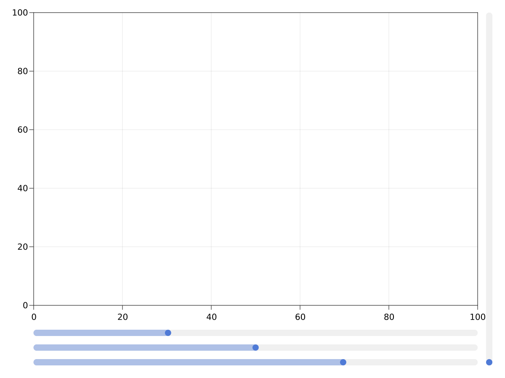
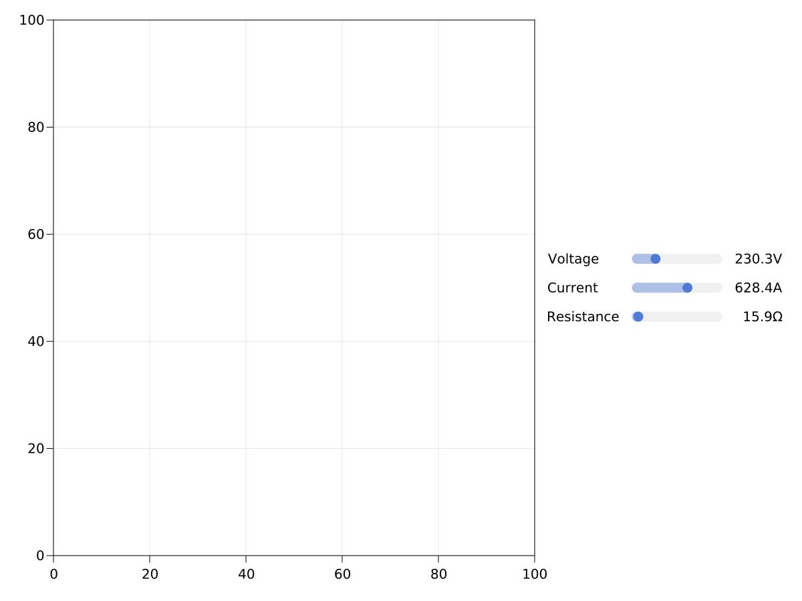
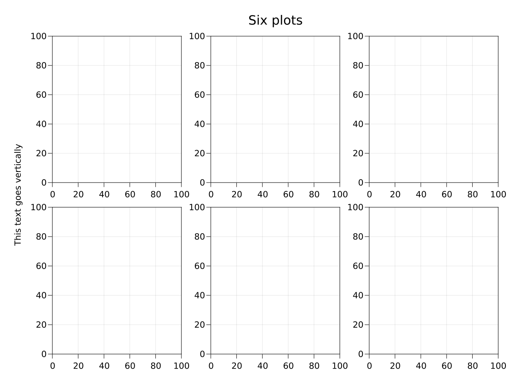
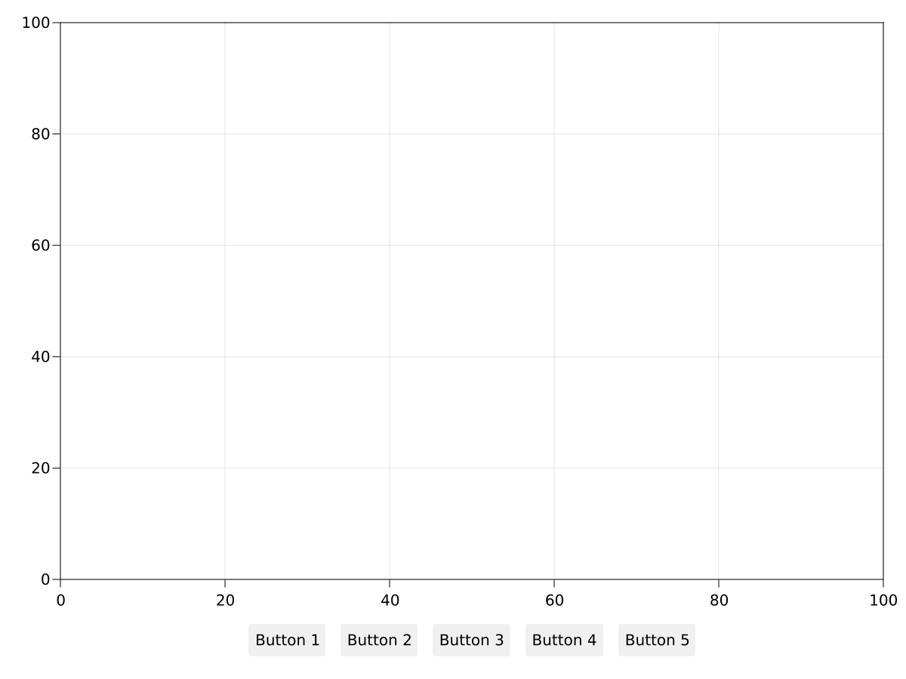
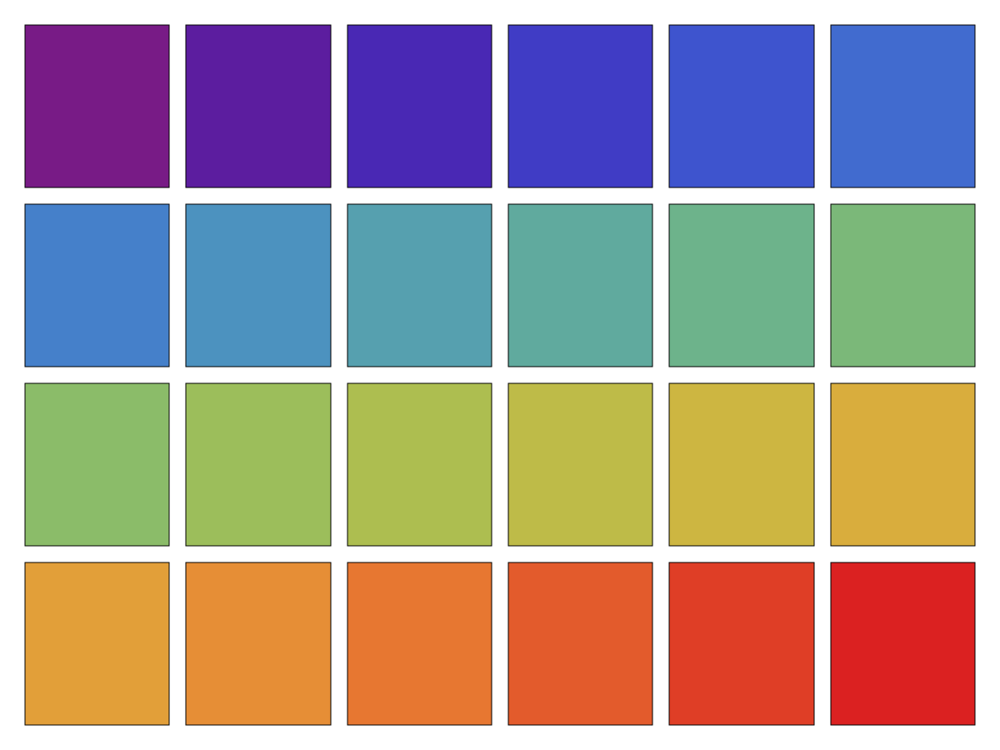
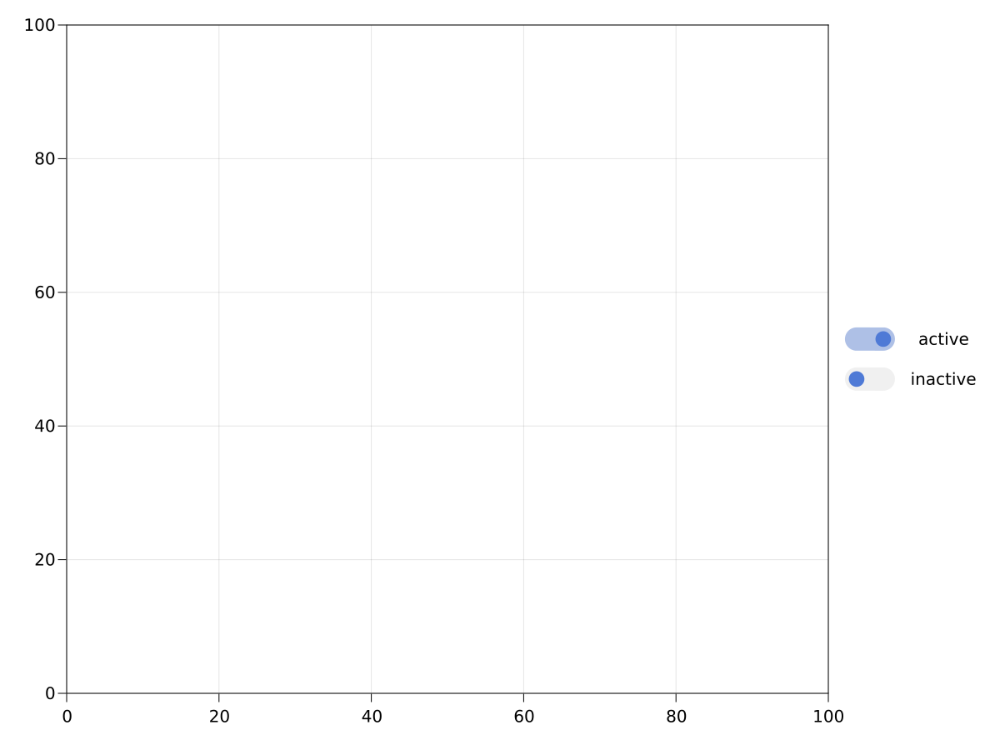
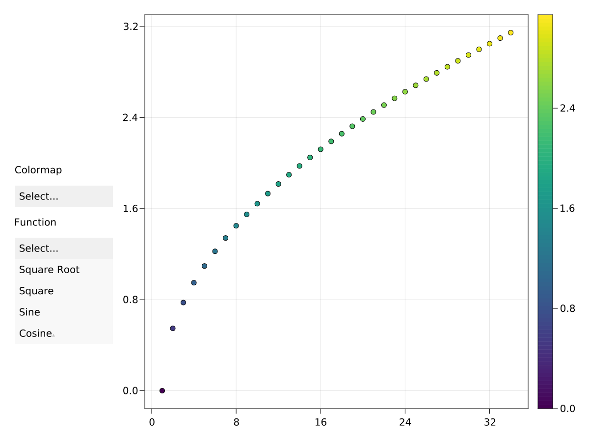

Slider
A simple slider without a label. You can create a label using a Label object, for example. You need to specify a range that constrains the slider's possible values. You can then lift the value observable to make interactive plots.
using CairoMakie
scene, layout = layoutscene(resolution = (1200, 900))
ax = layout[1, 1] = Axis(scene)
sl1 = layout[2, 1] = Slider(scene, range = 0:0.01:10, startvalue = 3)
sl2 = layout[3, 1] = Slider(scene, range = 0:0.01:10, startvalue = 5)
sl3 = layout[4, 1] = Slider(scene, range = 0:0.01:10, startvalue = 7)
sl4 = layout[:, 2] = Slider(scene, range = 0:0.01:10, horizontal = false,
tellwidth = true, height = nothing, width = Auto())
To create a horizontal layout containing a label, a slider, and a value label, use the convenience function AbstractPlotting.MakieLayout.labelslider!, or, if you need multiple aligned rows of sliders, use AbstractPlotting.MakieLayout.labelslidergrid!.
using CairoMakie
scene, layout = layoutscene(resolution = (1200, 900))
ax = layout[1, 1] = Axis(scene)
lsgrid = labelslidergrid!(scene,
["Voltage", "Current", "Resistance"],
Ref(LinRange(0:0.1:1000)); # same range for every slider via broadcast
formats = [x -> "$(round(x, digits = 1))$s" for s in ["V", "A", "Ω"]],
width = 350,
tellheight = false)
layout[1, 2] = lsgrid.layout
set_close_to!(lsgrid.sliders[1], 230.3)
set_close_to!(lsgrid.sliders[2], 628.4)
set_close_to!(lsgrid.sliders[3], 15.9)
If you want to programmatically move the slider, use the function AbstractPlotting.MakieLayout.set_close_to!. Don't manipulate the value attribute directly, as there is no guarantee that this value exists in the range underlying the slider, and the slider's displayed value would not change anyway by changing the slider's output.
Label
This is just normal text, except it's also layoutable. A text's size is known, so rows and columns in a GridLayout can shrink to the appropriate width or height.
using CairoMakie
scene, layout = layoutscene(resolution = (1200, 900))
axs = layout[1:2, 1:3] = [Axis(scene) for _ in 1:6]
supertitle = layout[0, :] = Label(scene, "Six plots", textsize = 30)
sideinfo = layout[2:3, 0] = Label(scene, "This text goes vertically", rotation = pi/2)
Button
using CairoMakie
scene, layout = layoutscene(resolution = (1200, 900))
layout[1, 1] = Axis(scene)
layout[2, 1] = buttongrid = GridLayout(tellwidth = false)
buttongrid[1, 1:5] = [Button(scene, label = "Button $i") for i in 1:5]
scene
Box
A simple rectangle poly that is layoutable. This can be useful to make boxes for facet plots or when a rectangular placeholder is needed.
using CairoMakie
using ColorSchemes
scene, layout = layoutscene(resolution = (1200, 900))
rects = layout[1:4, 1:6] = [Box(scene, color = c) for c in get.(Ref(ColorSchemes.rainbow), (0:23) ./ 23)]
LScene
If you need a normal Makie scene in a layout, for example for 3D plots, you have to use LScene right now. It's just a wrapper around the normal Scene that makes it layoutable. The underlying Scene is accessible via the scene field. You can plot into the LScene directly, though.
You can pass keyword arguments to the underlying Scene object to the scenekw keyword. Currently, it can be necessary to pass a couple of attributes explicitly to make sure they are not inherited from the main scene (which has a pixel camera and no axis, e.g.).
using CairoMakie
scene, layout = layoutscene(resolution = (1200, 900))
lscene = layout[1, 1] = LScene(scene, scenekw = (camera = cam3d!, raw = false))
# now you can plot into lscene like you're used to
scatter!(lscene, randn(100, 3))Toggle
A toggle with an attribute active that can either be true or false, to enable or disable properties of an interactive plot.
using CairoMakie
scene, layout = layoutscene(resolution = (1200, 900))
ax = layout[1, 1] = Axis(scene)
toggles = [Toggle(scene, active = ac) for ac in [true, false]]
labels = [Label(scene, lift(x -> x ? "active" : "inactive", t.active))
for t in toggles]
layout[1, 2] = grid!(hcat(toggles, labels), tellheight = false)
Menu
A dropdown menu with options, where each element's label is determined with optionlabel(element) and the value with optionvalue(element). The default behavior is to treat a 2-element tuple as (label, value) and any other object as value, where label = string(value).
The attribute selection is set to optionvalue(element) when the element's entry is selected.
using CairoMakie
scene, layout = layoutscene(resolution = (1200, 900))
menu = Menu(scene, options = ["viridis", "heat", "blues"])
funcs = [sqrt, x->x^2, sin, cos]
menu2 = Menu(scene, options = zip(["Square Root", "Square", "Sine", "Cosine"], funcs))
layout[1, 1] = vgrid!(
Label(scene, "Colormap", width = nothing),
menu,
Label(scene, "Function", width = nothing),
menu2;
tellheight = false, width = 200)
ax = layout[1, 2] = Axis(scene)
func = Node{Any}(funcs[1])
ys = @lift($func.(0:0.3:10))
scat = scatter!(ax, ys, markersize = 10px, color = ys)
cb = layout[1, 3] = Colorbar(scene, scat, width = 30)
on(menu.selection) do s
scat.colormap = s
end
on(menu2.selection) do s
func[] = s
autolimits!(ax)
end
menu2.is_open = true
Deleting Layoutables
To remove axes, colorbars and other layoutables from their layout and the scene, use delete!(layoutable).